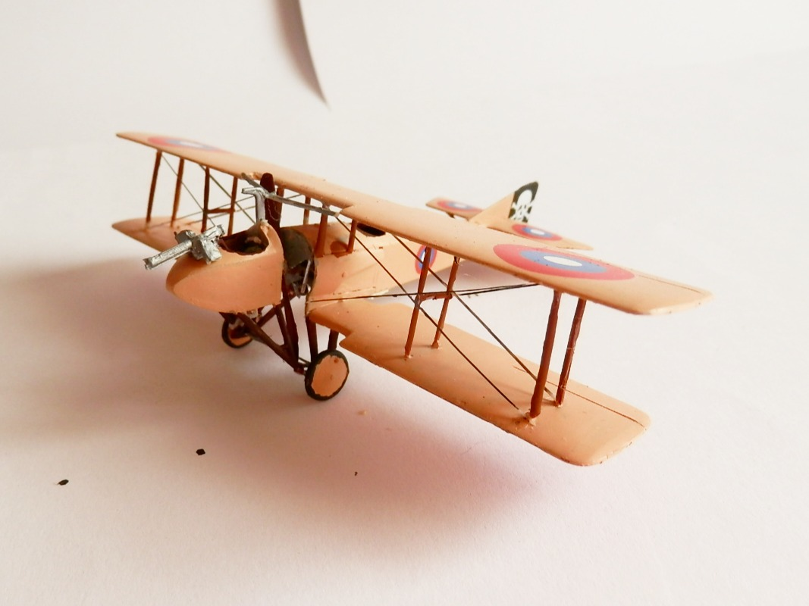
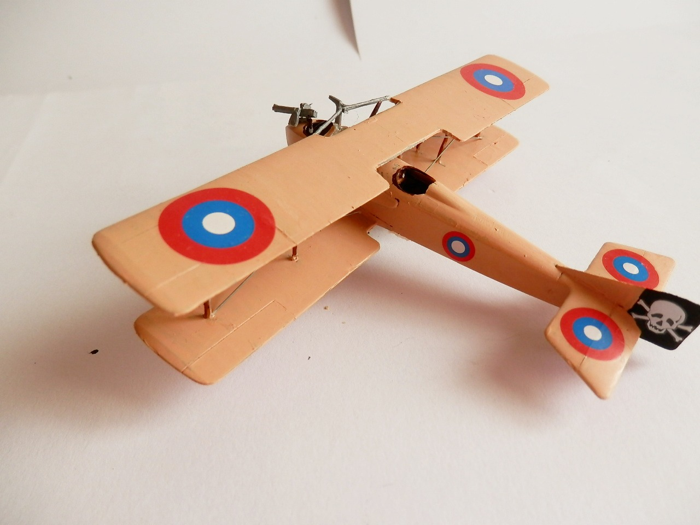
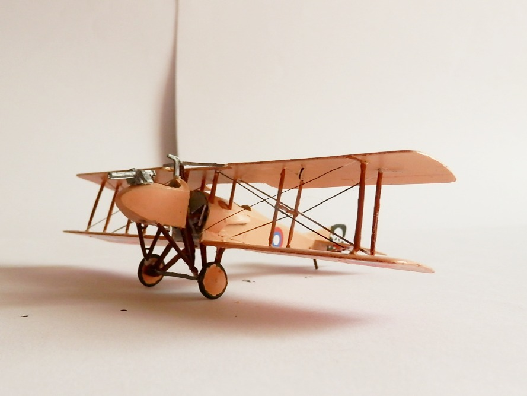

Aerei · scale model archive
SPAD S.A. 2
SPAD S.A. 2 — Kit: Amodel, Scale: 1/72. Cute kit of an unusual aeroplane. In times when no machine gun synchronization mechanism was available, a…

Photo gallery


English description
Cute kit of an unusual aeroplane. In times when no machine gun synchronization mechanism was available, a solution would be to put a poor blighter IN FRONT of the propeller allowing him to pepper the airspace around at ease, utterly preposterous isn`t it?
Descrizione italiana
Kit simpatico di un aeroplano insolito. Ai tempi in cui non esisteva ancora un sincronizzatore per la mitragliatrice, una soluzione poteva essere mettere un poveraccio DAVANTI all’elica, permettendogli di mitragliare lo spazio aereo attorno con una certa libertà: assolutamente preposterous, non trovate?